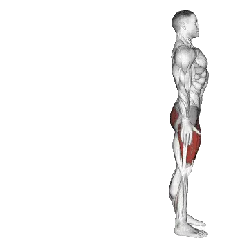

中级平均次数
一般中级训练者的参考值。
男性
34
女性
6
反向弓步平均次数
| 等级 | ||
|---|---|---|
| 初学者 | < 1 | < 1 |
| 初级者 | 10 | < 1 |
| 中级者 | 34 | 6 |
| 进阶者 | 64 | 22 |
| 菁英 | 99 | 41 |
注：这些数值是单组可完成平均次数的估算。体重、动作幅度、节奏等个人因素都可能造成差异。详细数据请参考下方表格。
反向弓步标准次数
男性按体重(lb)数据 [次数]
| 体重 | 初学者 | 初级者 | 中级者 | 进阶者 | 菁英 |
|---|---|---|---|---|---|
| 110 | < 1 | 9 | 38 | 76 | 120 |
| 120 | < 1 | 9 | 37 | 74 | 115 |
| 130 | < 1 | 10 | 37 | 71 | 111 |
| 140 | < 1 | 10 | 36 | 69 | 107 |
| 150 | < 1 | 10 | 36 | 67 | 103 |
| 160 | < 1 | 11 | 35 | 65 | 100 |
| 170 | < 1 | 11 | 34 | 64 | 97 |
| 180 | < 1 | 11 | 34 | 62 | 93 |
| 190 | < 1 | 11 | 33 | 60 | 91 |
| 200 | < 1 | 10 | 32 | 58 | 88 |
| 210 | < 1 | 10 | 31 | 57 | 85 |
| 220 | < 1 | 10 | 31 | 55 | 83 |
| 230 | < 1 | 10 | 30 | 54 | 80 |
| 240 | < 1 | 10 | 29 | 52 | 78 |
| 250 | < 1 | 10 | 28 | 51 | 76 |
| 260 | < 1 | 10 | 28 | 50 | 74 |
| 270 | < 1 | 9 | 27 | 49 | 72 |
| 280 | < 1 | 9 | 26 | 47 | 70 |
| 290 | < 1 | 9 | 26 | 46 | 69 |
| 300 | < 1 | 9 | 25 | 45 | 67 |
| 310 | < 1 | 9 | 24 | 44 | 65 |
男性按年龄数据 [次数]
| 年龄 | 初学者 | 初级者 | 中级者 | 进阶者 | 菁英 |
|---|---|---|---|---|---|
| 15 | < 1 | 5 | 25 | 51 | 80 |
| 20 | < 1 | 9 | 33 | 62 | 96 |
| 25 | < 1 | 10 | 34 | 64 | 99 |
| 30 | < 1 | 10 | 34 | 64 | 99 |
| 35 | < 1 | 10 | 34 | 64 | 99 |
| 40 | < 1 | 10 | 34 | 64 | 99 |
| 45 | < 1 | 9 | 31 | 60 | 92 |
| 50 | < 1 | 7 | 27 | 54 | 85 |
| 55 | < 1 | 4 | 23 | 48 | 76 |
| 60 | < 1 | 1 | 18 | 41 | 67 |
| 65 | < 1 | < 1 | 14 | 34 | 58 |
| 70 | < 1 | < 1 | 10 | 28 | 49 |
| 75 | < 1 | < 1 | 6 | 22 | 40 |
| 80 | < 1 | < 1 | 3 | 16 | 33 |
| 85 | < 1 | < 1 | < 1 | 12 | 27 |
| 90 | < 1 | < 1 | < 1 | 8 | 21 |
女性按体重(lb)数据 [次数]
| 体重 | 初学者 | 初级者 | 中级者 | 进阶者 | 菁英 |
|---|---|---|---|---|---|
| 90 | < 1 | < 1 | 9 | 30 | 54 |
| 100 | < 1 | < 1 | 9 | 28 | 50 |
| 110 | < 1 | < 1 | 8 | 26 | 47 |
| 120 | < 1 | < 1 | 7 | 24 | 44 |
| 130 | < 1 | < 1 | 7 | 22 | 41 |
| 140 | < 1 | < 1 | 6 | 21 | 39 |
| 150 | < 1 | < 1 | 6 | 19 | 36 |
| 160 | < 1 | < 1 | 5 | 18 | 34 |
| 170 | < 1 | < 1 | 4 | 17 | 32 |
| 180 | < 1 | < 1 | 4 | 16 | 31 |
| 190 | < 1 | < 1 | 3 | 15 | 29 |
| 200 | < 1 | < 1 | 2 | 14 | 27 |
| 210 | < 1 | < 1 | 2 | 13 | 26 |
| 220 | < 1 | < 1 | 1 | 12 | 24 |
| 230 | < 1 | < 1 | < 1 | 11 | 23 |
| 240 | < 1 | < 1 | < 1 | 10 | 22 |
| 250 | < 1 | < 1 | < 1 | 10 | 21 |
| 260 | < 1 | < 1 | < 1 | 9 | 20 |
女性按年龄数据 [次数]
| 年龄 | 初学者 | 初级者 | 中级者 | 进阶者 | 菁英 |
|---|---|---|---|---|---|
| 15 | < 1 | < 1 | 1 | 14 | 31 |
| 20 | < 1 | < 1 | 6 | 21 | 39 |
| 25 | < 1 | < 1 | 6 | 22 | 41 |
| 30 | < 1 | < 1 | 6 | 22 | 41 |
| 35 | < 1 | < 1 | 6 | 22 | 41 |
| 40 | < 1 | < 1 | 6 | 22 | 41 |
| 45 | < 1 | < 1 | 5 | 19 | 38 |
| 50 | < 1 | < 1 | 3 | 16 | 33 |
| 55 | < 1 | < 1 | < 1 | 13 | 29 |
| 60 | < 1 | < 1 | < 1 | 10 | 24 |
| 65 | < 1 | < 1 | < 1 | 7 | 18 |
| 70 | < 1 | < 1 | < 1 | 3 | 14 |
| 75 | < 1 | < 1 | < 1 | < 1 | 9 |
| 80 | < 1 | < 1 | < 1 | < 1 | 6 |
| 85 | < 1 | < 1 | < 1 | < 1 | 2 |
| 90 | < 1 | < 1 | < 1 | < 1 | < 1 |
注：表格中的数值是单组可完成次数的参考。按体重数据可用来估算相对负荷，按年龄数据可用来观察趋势差异。
用 Shiba App 记录与分析
集中查看重量、次数与进步变化。
表格说明
| 等级 | 说明 | 分布 |
|---|---|---|
| 初学者 | 掌握正确动作，并持续训练至少 1 个月。 | 后 5% |
| 初级者 | 持续规律训练至少 6 个月。 | 前 80% |
| 中级者 | 持续规律训练至少 2 年。 | 前 50% |
| 进阶者 | 持续规律训练超过 5 年。 | 前 20% |
| 菁英 | 针对该动作专项训练超过 5 年。 | 前 5% |